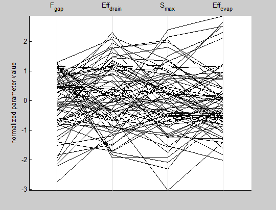

mmsodaPlotPaCo(conf,evalResults)
mmsodaPlotPaCo(conf,evalResults)
Plots a parallel coordinate plot of the parameters. Depending on the options, parameter values can be standardized, axes can be inverted, or the plot can be constructed based on user-specified selections of the data.
| Option | Description |
| 'invAxes' | Logical array with conf.nOptPars elements stating if the plotting axis for a particular parameter should be inverted or not. |
| 'standardize' | 1x1 logical array used to specify whether the data should be standardized or not. |
| 'iterSelection' | This parameter lets you make a parallel coordinates plot based on a selection of rows from the evalResults array. By default, the last 5*conf.nSamples rows are selected. |
